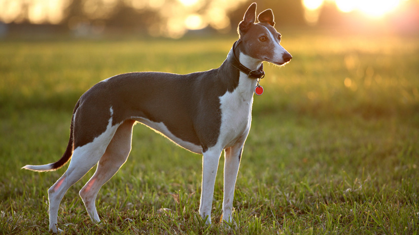

Greyhound
Greyhounds are graceful, lanky, and sweet-tempered dogs that are beloved for their tender demeanor and sleepy personalities. When they are not cuddling on the couch, these hunting hounds love long walks and chasing after squirrels that catch their eye. Greyhounds' history as racing dogs belies the fact that they enjoy the slow lane comforts of life and make excellent family pets.
Despite their reputation as the world's fastest dog, they are often nicknamed "40-mph-couch potatoes" because they are perfectly content to lounge around the house or accompany owners on a leisurely walk. Greyhounds are often described as cat-like because of their regal, graceful behavior.
